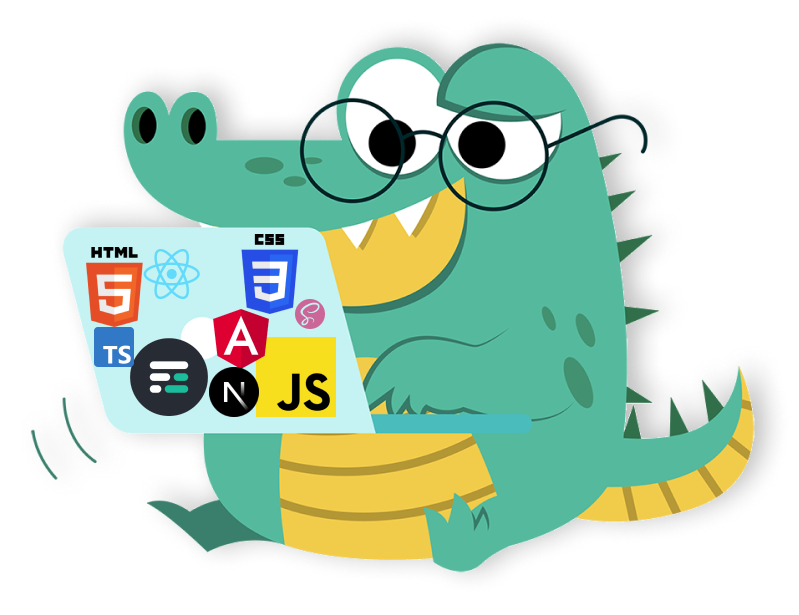

CV de Joel Vera Alvarado
Full Stack Web Developer
Over 6 years of experience building web applications , both as Frontned and Backend Developer
Education
- Software Developer Engineer
- 2012-2014. Universidad Politécnica de Chiapas
- TOEFL
- Late 2015. 640/677 score

Professional Experience
- CTO & CO FOUNDER OF CÓDIGO FACILITO
- 2012-Current, CTO and Developer building software to teach hundreds of thousands of students around the
world to code
- FREELANCE DEVELOPER
- 2013-2016. Software developer for multiple proyects that involved both mobile and web applications
- WEB DEVELOPER
- Late 2015. Developer for a web application with data visualization of semantic web information at Tec
Monterrey Atizapan
Awards
- 1ST PLACE GOOGLE IO HACKATHON 2014 AT CMPMX
- 2014
- 2D PLACE PAYPAL HACKATHON AT MEXICO CITY
- 2014
Other
- Over 35 online courses taught.
- Over 10 workshops taught at multiple universities.
- Speaker at multiple events at universities in Mexico.